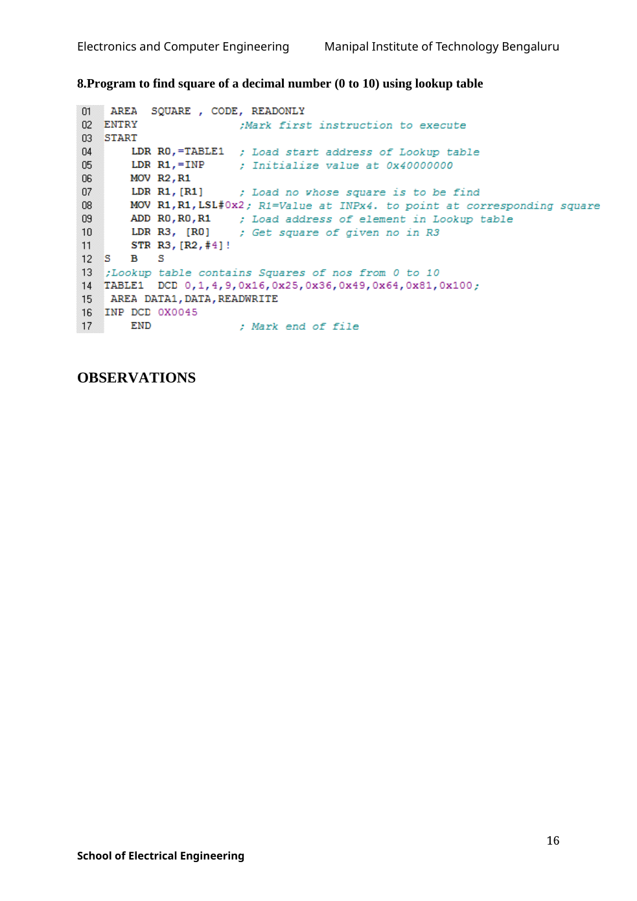

AREA PROGRAM1, CODE, READONLY
ENTRY
LDR R0,NUMBER1 ; READ NUMBER FROM MEMORY
LDR R1,NUMBER2 ; READ NUMBER FROM MEMORY
AND R2,R0,R1
EOR R3,R0,R1
ORR R4,R0,R1
S B SOriginal manual image(s)

Selectable source code · printed line numbers removed
AREA PROGRAM1, CODE, READONLY
ENTRY
LDR R0,NUMBER1 ; READ NUMBER FROM MEMORY
LDR R1,NUMBER2 ; READ NUMBER FROM MEMORY
AND R2,R0,R1
EOR R3,R0,R1
ORR R4,R0,R1
S B S